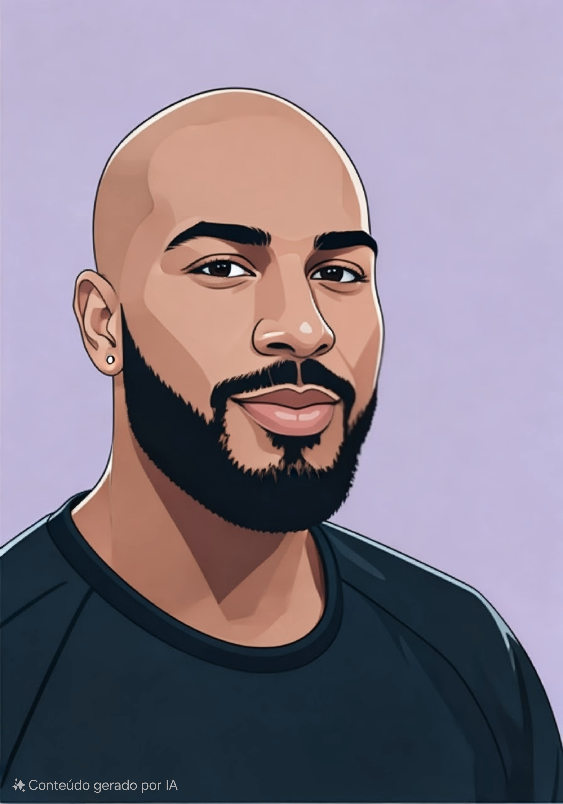

Iago Trindade Souza
Ola!
um pouco mais sobre mim
Sou estudante de Engenharia de Software no Centro Univeritario Internacional UNINTER, resido em Vitoria, capital do Espirito Santo. Sempre me interessei por computadores, entender como eles funcionam, o interesse tonou-se um hobbie e criou-se um objetivo de torna-lo uma profissao.
Como Brasileiro, futebol e uma paixao e o ciclismo e meu esporte favorito